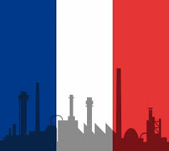
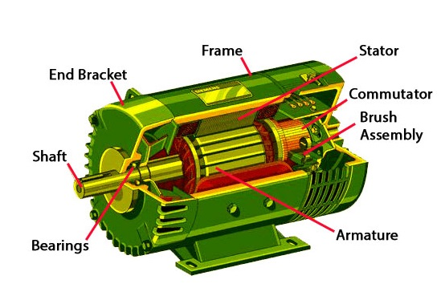

Une entreprise familiale
La première édition de la Fête du vélo se tiendra ce samedi 24 septembre avec de nombreuses animations gratuites La première
édition de la Fête du Vélo, ce samedi 24 septembre esplanade de la Barre à Anglet, entend promouvoir l'usage du deux
roues dans l'agglomération. Une journée entièrement consacrée au vélo sous toutes ses formes, avec de nombreuses animations
gratuites pour tous et un village d'exposants prêts à apporter conseils et informations. Des ateliers et animations
au Cyclo Village De 10 heures à 19 heures, sur l'esplanade de la Barre, le Cyclo Village réunira associations et professionnels
du vélo afin de proposer de nombreuses animations et ateliers gratuits pour tous les âges. Avec notamment : - La Vélo
École, un circuit et des épreuves pour permettre aux enfants de tester leur capacité à pédaler en toute sécurité. -
Le marquage gratuit de vélos, proposé par l'atelier vélo Txirrind'Ola et le Syndicat des transports. - Le Labo vélo,
pour découvrir et tester tous types de vélos (vélos à assistance électrique, pliable, tandems, vélos adaptés aux personnes
à mobilité réduite, vélo à hydrogène). - L'atelier réparation/entretien, pour bénéficier de conseils pratique sur l'entretien
d'un vélo.
En savoir plus

Le boîtier : Il contient tous les composants du moteur électrique. L’axe :Il reçoit l’énergie générée par la rotation du
moteur. Il la transmet à un système externe par l’intermédiaire d’une connexion mécanique. Pièce de métal se prolongeant
vers l’extérieur du boîtier. Le stator :Il est stationnaire et constitue habituellement l’aimant du moteur électrique.
Il peut s’agir d’un aimant permanent ou d’un électroaimant. Un électroaimant contient un bobinage, qui est le plus souvent
en fil de cuivre. Le commutateur :Situé près du stator, il inverse la direction du courant dans le dispositif. Il est
une des rares pièces mobiles des moteurs électriques. Balais : Les balais sont au contact du commutateur et complètent
le circuit électrique nécessaire au passage du courant vers le bobinage. Roulements :Ils portent l’axe du moteur et
sont montés dans les parois du boîtier. Ils autorisent une rotation libre de l’axe avec une friction minimale et éliminent
les mouvements parasites. Armature :Ce composant conducteur est situé au centre du moteur électrique. Sous l’effet combiné
du champ magnétique et du bobinage, il génère le couple mécanique qui déclenche la rotation de l’axe. Support d'extrémité
: Monté sur le boîtier en bout d’axe, il permet de fixer le moteur et laisse passer l’axe.